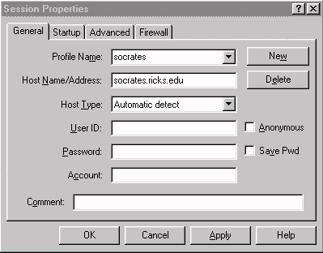
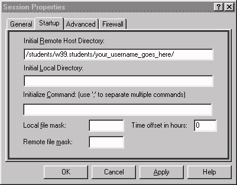
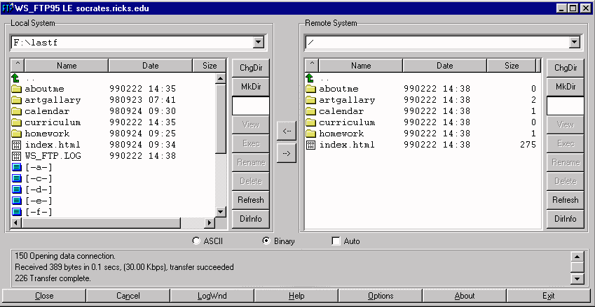

Please Note: Before uploading your page onto the web server, make sure that your web files are saved and that they are saved in the right folder. Also, the files in your web folder may or may not have been used in your Web pages. Please remove any unused files from your web folder on the zip disk before attempting to upload files and folders to the server (these might be bitmap graphics or other files that you gathered as resources, but did not use).
1. Double click on the WS_FTP95LE icon. (If that icon does not appear on the desktop, you can also click on the Start menu, go to programs, then WS_ftp, then WS_FTP95LE.
WS_FTP95LE is an FTP (File Transfer Protocol) program. It does as the name implies, transfers files from one location (your zip disk) to another location (a web server).
2. Once the FTP program launches, a Session Properties screen will appear.

Click on the General tab and then type in the following information. (If it is already correct, you can leave it and click OK.)
PROFILE NAME: socrates
HOST NAME/ADDRESS: socrates.ricks.edu
HOST: Automatic Detect
USER ID: Type your username here (last name, first initial)
ACCOUNT: Type your username here, also.
3. Click on the Start-Up tab, the window should change.

the Initial Remote line should be:
/students/w99.students/your username/ [remember to put in your last name and first initial where it indicates your user name]
4. There are also tabs labeled Advanced and Firewall, but you will normally not need to worry about these. Click OK.
5. A password box should then appear. Type in your password. Press the Enter key or click "OK".
6. If you successfully connect to the server you will hear a "Clang" sound. If something is wrong, you will hear an "oh-oh" sound.
7. A screen will appear that has two separate menu areas: one on the left labeled "Local System" and one on the right labeled "Remote System."

8. The files shown in the Local System (the left side of your screen) normally default to the C: drive. Your files however, are on your Zip disk. Change to your zip disk by clicking on the ChgDir button. Type E: in the dialog box and click OK.
9. You should now see the files and folders on your zip disk. Open your web folder by double-clicking it.
10. The Remote system window (on the right) is blank the first time you connect to the server. This is because you are already inside your web folder on the server and it is empty. As you copy items from your zip to the server, they will appear in the "Remote system" window.
11. To move items from the web folder on your Local system window (on the left) to the Remote System (on the right) do the following:
12. Repeat step 11 until everything you used in your web site is loaded onto the server. You need to include anything you used: pages, graphics, pictures, backgrounds, etc. However, only include those items you used on your web page. Do not crowd the server by moving things that don't belong. (This makes it important to remember what you name your pages, as well as pictures, graphics, backgrounds, etc.)
13. After you have moved everything, click on the refresh button to make sure your changes were added, and then click on the exit button.
14. To see if everything is downloaded onto the web, open Netscape Navigator and find your student page. Your page should show up, looking exactly the same as it did in Adobe PageMill. If anything is missing, make sure that you moved it from the left to the right side in WS_FTP95LE. If you did not, go back in and move it following the steps outlined above.
15. To test your site operation on the server go to either
Socrates or Socrates2
and click on the Student Pages link. Go to the semester link in
which you are enrolled in this course. Find your name and click
it. It should take you to your main index page. From there you
can follow your own links.